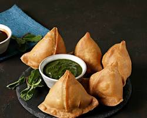
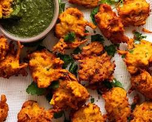
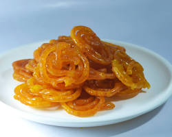

Appetizers
Samosas (₹50-100): These crispy fried or baked pastries are a popular appetizer in Indian cuisine. Samosas are often served with a chutney for dipping, like mint or tamarind chutney. You can order may cost a bit more, around ₹20-30 per samosa.
Pakoras (₹30-80): Pakoras are a fritter dish made by dipping vegetables or meat in a spiced chickpea flour batter and then deep-frying them. They are a popular street food and appetizer in India. Price: Pakoras can be found at Indian restaurants or street vendors for a very affordable price, typically around ₹30-80 per serving.
Dahi Vada (₹40-70): Dahi Vada is a delicious savory snack from North India. It consists of lentil fritters (vadas) soaked in creamy yogurt (dahi) and drizzled with chutneys and spices. Price: Dahi Vada can be found at Indian restaurants or street vendors for a very affordable price, typically around ₹40-70 per serving.

Mains
Butter Chicken (₹150-300): This creamy tomato-based curry features tender chicken pieces marinated in yogurt and spices, simmered in a rich sauce with butter, tomatoes, onions, and aromatics. It's a crowd-pleasing dish perfect with rice or naan. Price: Expect to pay around ₹150-300 depending on the restaurant and portion size.

Saag Paneer (₹120-250): A vegetarian delight, Saag Paneer is a vibrant green curry made with spinach (saag) and cubed paneer (Indian cottage cheese) in a mildly spiced gravy. Often flavored with ginger, garlic, and other spices, it's a healthy and flavorful option. Price: This dish typically costs ₹120-250 at restaurants.

Lamb Rogan Josh (₹200-400): For a richer option, Lamb Rogan Josh is a slow-cooked curry with succulent lamb pieces cooked in a flavorful gravy of yogurt, tomatoes, onions, and aromatic spices like cloves, cardamom, and bay leaves. Price: Due to the meat, this dish can range from ₹200-400 depending on the restaurant.

Desserts
Gulab Jamun (₹80-150): These melt-in-your-mouth sweet dumplings are made with fried dough balls soaked in a fragrant sugar syrup flavored with rosewater and cardamom. Gulab Jamun is a popular and decadent dessert. Price: You can find Gulab Jamun for ₹80-150 per serving at most Indian restaurants.

Jalebi (₹50-100): Jalebi is a bright orange, pretzel-shaped sweet made from a fermented batter that's deep-fried and then soaked in a sugar syrup. It has a crispy exterior and a soft, chewy interior with a distinct sweetness. Price: Jalebi is a delightful and affordable treat, costing around ₹50-100 per serving.
Kulfi (₹40-80): Kulfi is a dense, flavorful Indian ice cream made with condensed milk, nuts, and various flavorings like cardamom, pistachio, or saffron. It's traditionally frozen in conical molds and has a richer texture compared to regular ice cream. Price: Kulfi is a budget-friendly dessert, typically priced around ₹40-80 per serving.